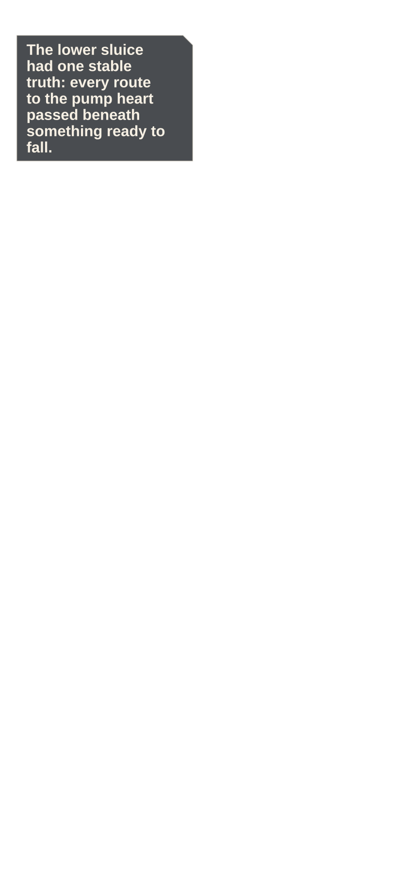
Beat and source
The lower Verdigris sluice hangs beneath a cracked ceiling, with the pump heart visible through one distant arch.
experiments/reimaginings/ember-lattice/volume/ch07/source/p001.pngEMBER LATTICE · OWNER REVIEW · FULL
24 continuous panels · 13 action · 339 dialogue words · 4 system moments
Phone reader · Full-size reader · Compact review · Action strip · Diagnostics

The lower Verdigris sluice hangs beneath a cracked ceiling, with the pump heart visible through one distant arch.
experiments/reimaginings/ember-lattice/volume/ch07/source/p001.png
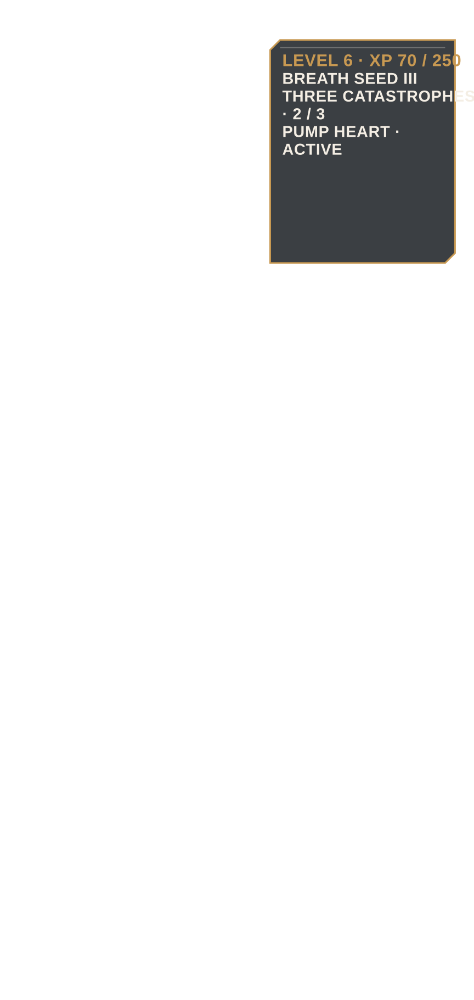
The active pump quest and hidden three-catastrophe condition sit beside Elian's L6 Seed III status.
experiments/reimaginings/ember-lattice/volume/ch07/source/p002.png
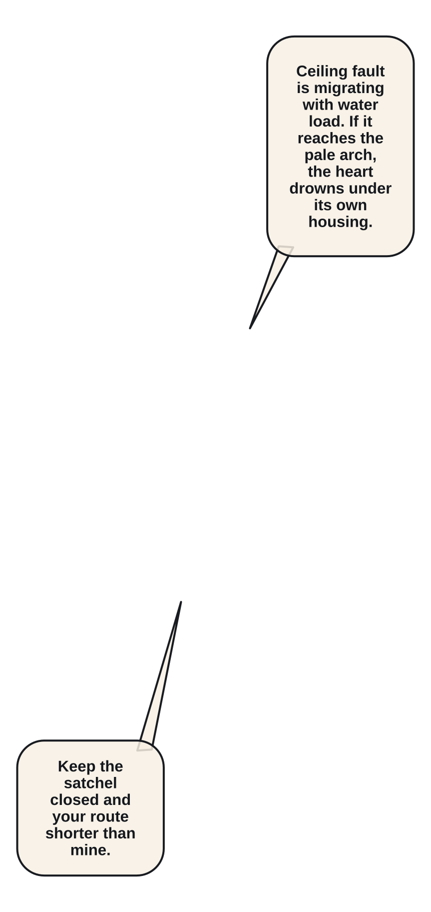
Orin checks his kiln satchel straps while warning that the ceiling fault is moving against the water load.
experiments/reimaginings/ember-lattice/volume/ch07/source/p003.png
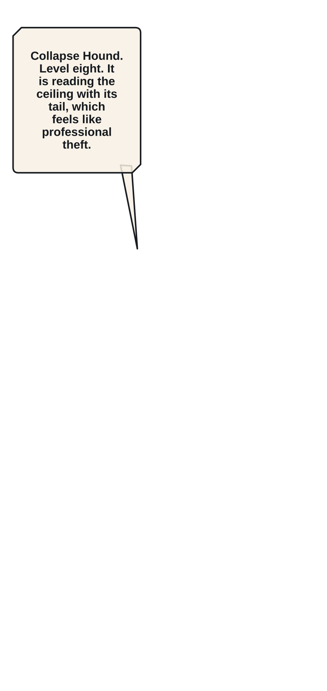
A Level 8 Collapse Hound steps onto the central beam, its counterweight tail reading the same ceiling crack.
experiments/reimaginings/ember-lattice/volume/ch07/source/p004.png
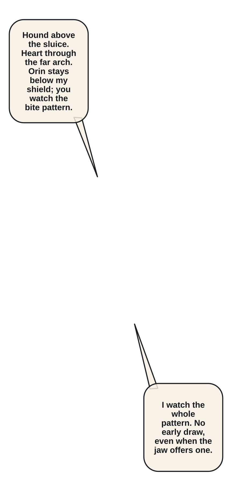
Wide geography fixes the Hound above the secondary sluice, Mira below, Orin near the heart line, and Elian opposite.
experiments/reimaginings/ember-lattice/volume/ch07/source/p005.png
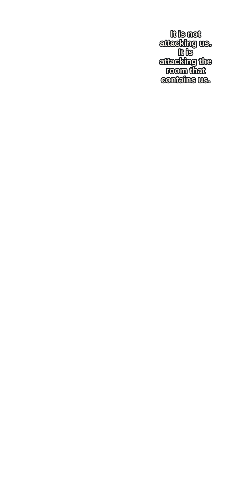
The Hound bites a load-bearing seam and pulls the ceiling fracture toward the pump heart.
experiments/reimaginings/ember-lattice/volume/ch07/source/p006.png
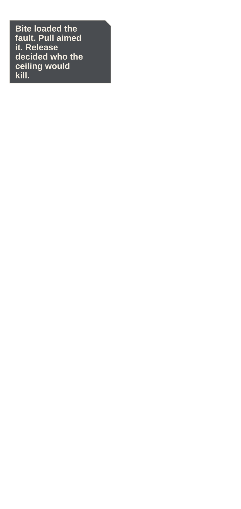
Elian reads the complete bite-pull-release pattern instead of striking the exposed jaw.
experiments/reimaginings/ember-lattice/volume/ch07/source/p007.png
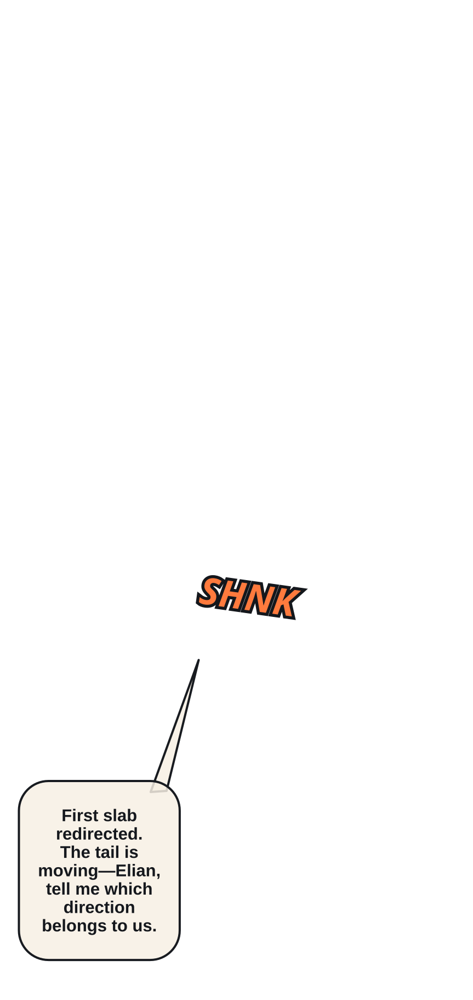
Mira braces the first falling slab away from Orin's route.
experiments/reimaginings/ember-lattice/volume/ch07/source/p008.png
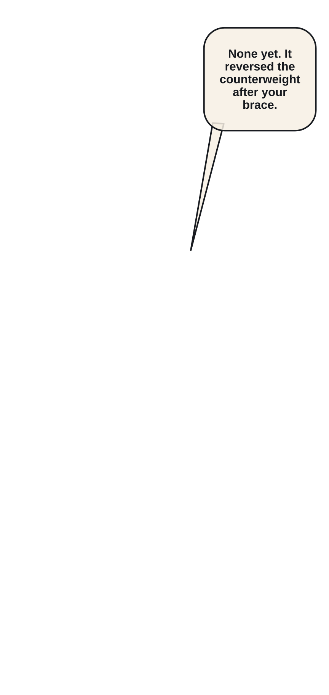
The Hound releases its counterweight tail and reverses the slab toward Mira.
experiments/reimaginings/ember-lattice/volume/ch07/source/p009.png
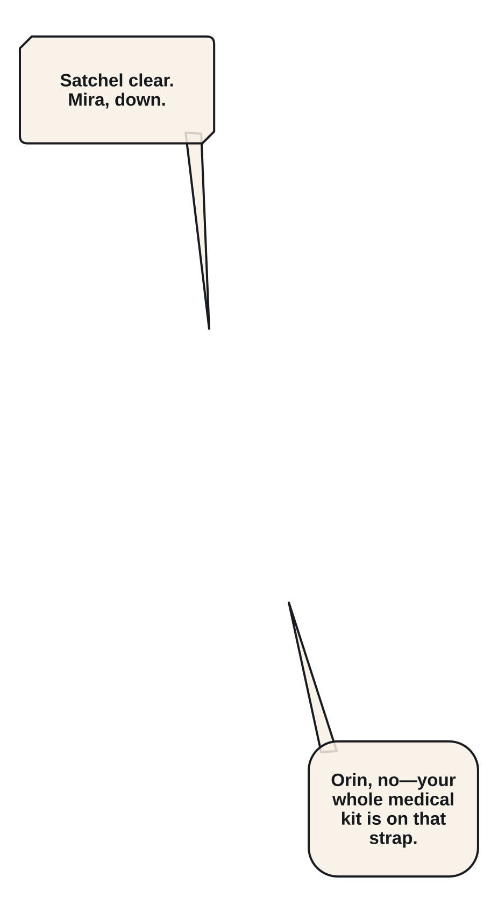
Orin throws his kiln satchel clear of Mira; it falls into the acid water and burns away.
experiments/reimaginings/ember-lattice/volume/ch07/source/p010.png
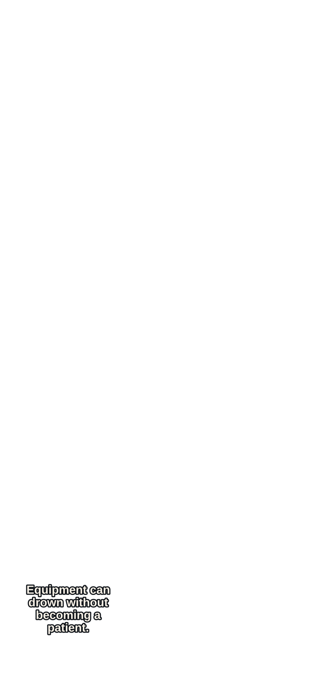
A whole ceiling plate begins to descend between the party and the pump heart.
experiments/reimaginings/ember-lattice/volume/ch07/source/p011.png
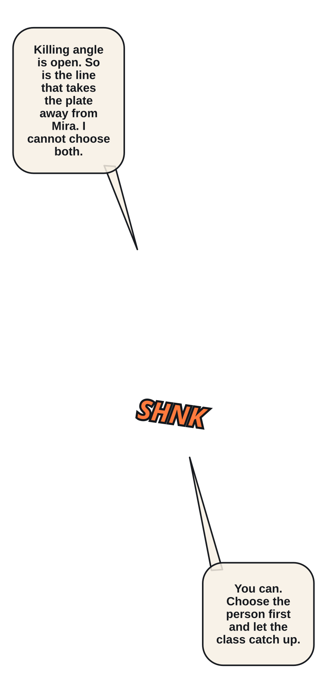
Elian abandons the killing angle and Fault Steps to the seam that can divert the plate from Mira.
experiments/reimaginings/ember-lattice/volume/ch07/source/p012.png
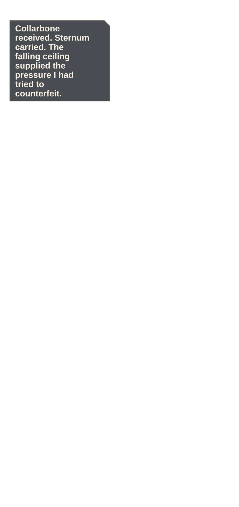
The three Pressure Breath circuits align from collarbone through sternum under the falling weight.
experiments/reimaginings/ember-lattice/volume/ch07/source/p013.png
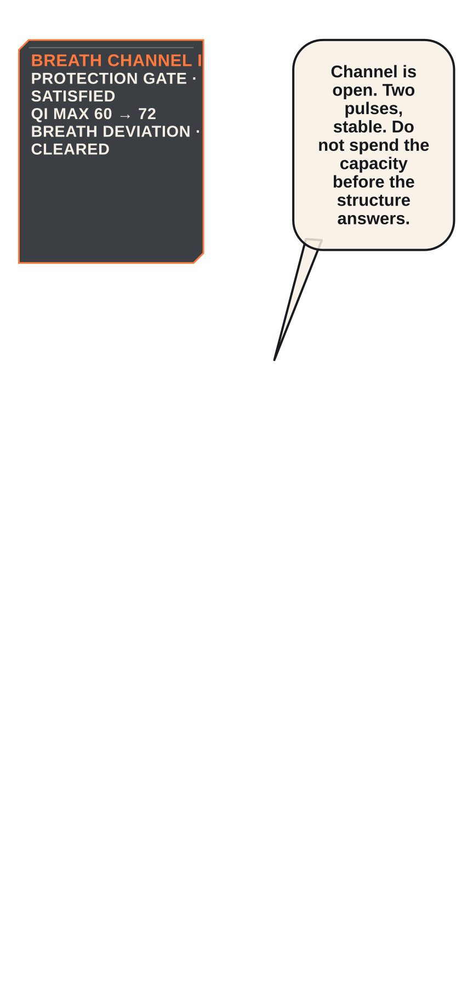
Breath Channel I opens as two controlled pulses route the moving fault away from the pump heart.
experiments/reimaginings/ember-lattice/volume/ch07/source/p014.png
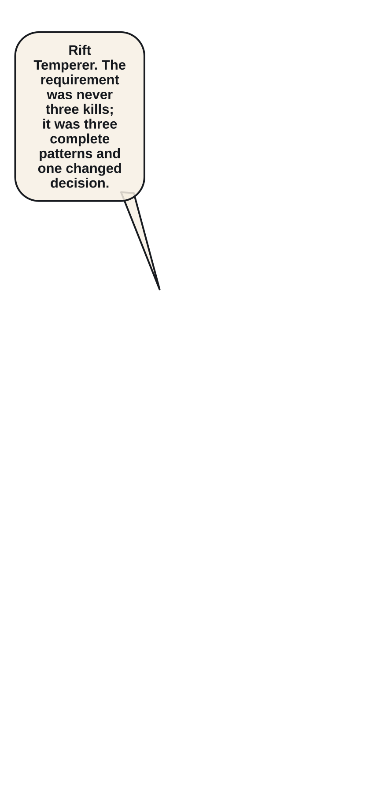
The Ledger offers Rift Temperer after three observed catastrophic patterns and the completed protection choice.
experiments/reimaginings/ember-lattice/volume/ch07/source/p015.png
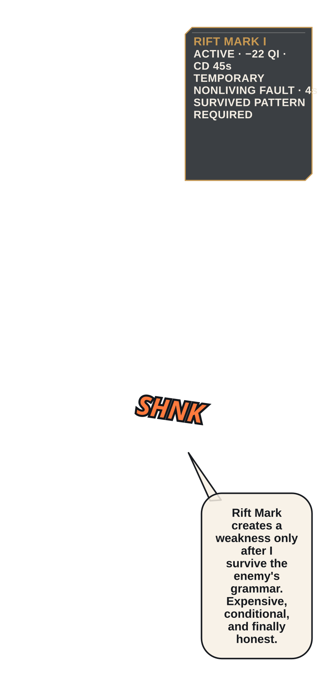
Elian accepts; Rift Mark I appears with its survive-pattern prerequisite, 22 Qi cost, 45s cooldown, and four-second duration.
experiments/reimaginings/ember-lattice/volume/ch07/source/p016.png
He creates one temporary fault on the Hound's ceramic counterweight after surviving its full pattern.
experiments/reimaginings/ember-lattice/volume/ch07/source/p017.png
Mira uses Bastion Arc to drive falling debris toward the temporary fault instead of across the party.
experiments/reimaginings/ember-lattice/volume/ch07/source/p018.png
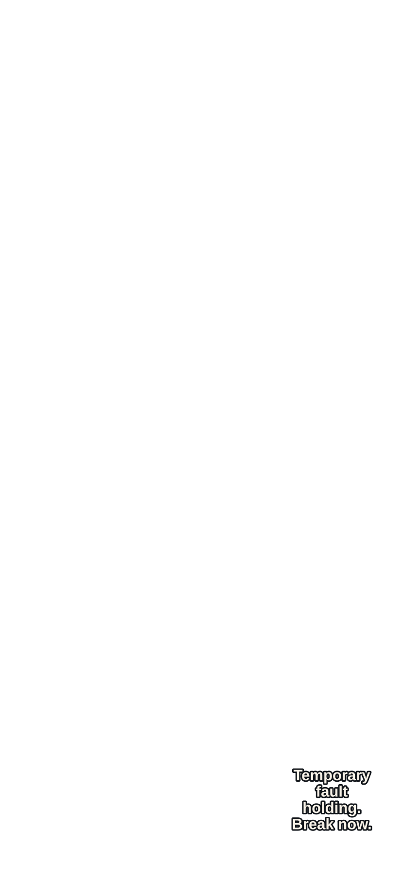
The ceiling breaks along Elian's marked line and buries the Hound while leaving the pale pump heart untouched.
experiments/reimaginings/ember-lattice/volume/ch07/source/p019.png
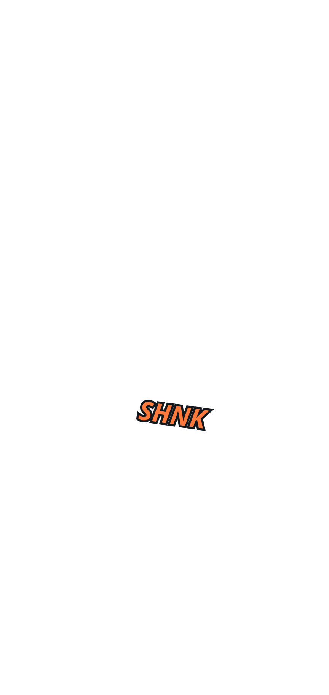
The Hound's rear leg remains visible and still, while the secondary sluice collapses into dark water.
experiments/reimaginings/ember-lattice/volume/ch07/source/p020.png
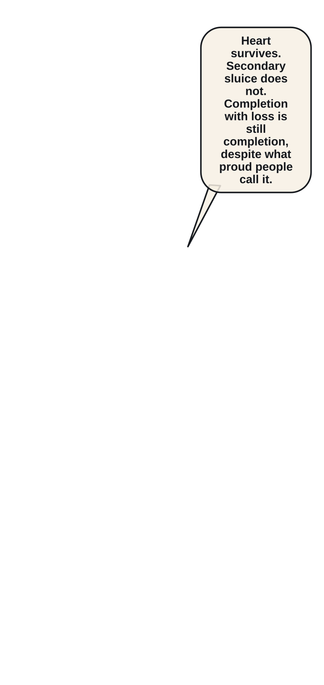
Keep the Pump Heart becomes COMPLETED_WITH_LOSS; the heart survives and the secondary sluice is permanently gone.
experiments/reimaginings/ember-lattice/volume/ch07/source/p021.png
A Relic Rift Nail and Tempered Survey Bracer remain in the Hound's broken counterweight.
experiments/reimaginings/ember-lattice/volume/ch07/source/p022.png
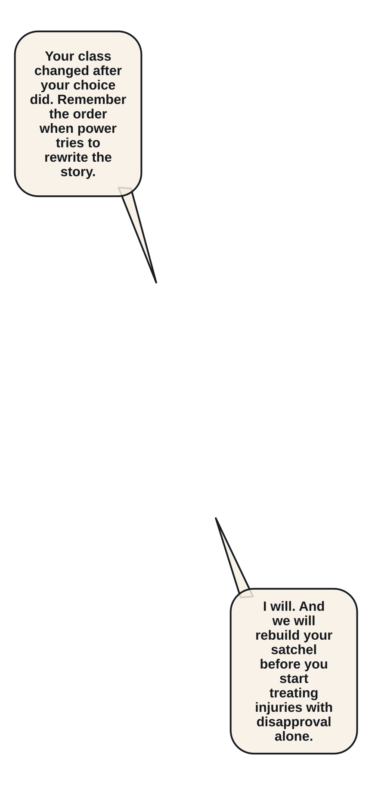
Mira tells Elian the class changed because his decision changed first; Orin mourns the lost satchel without melodrama.
experiments/reimaginings/ember-lattice/volume/ch07/source/p023.png
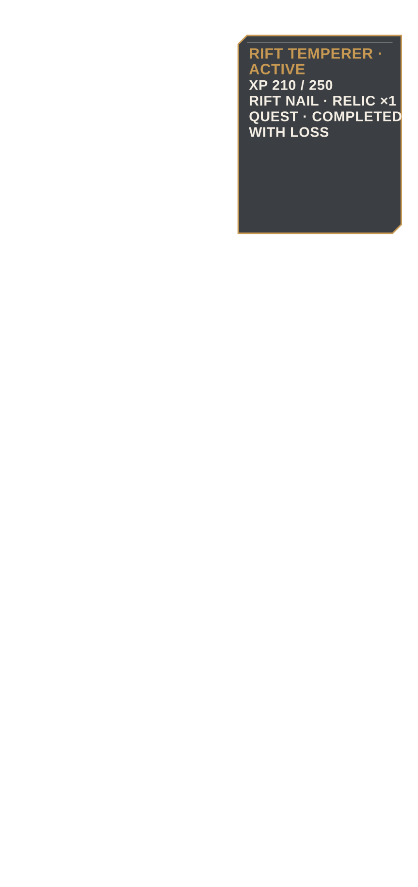
L6 210/250 XP, Channel I, Rift Temperer, new gear, faction gain, and environmental loss reconcile.
experiments/reimaginings/ember-lattice/volume/ch07/source/p024.png